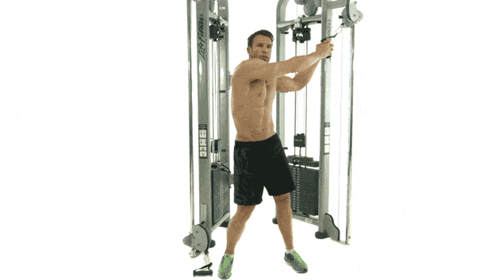

Lie face up on your mat and place your hands behind your head, lightly supporting it with your fingers. Bring the knees into the chest and lift the shoulder blades off the floor without pulling on the neck.
Rotate to the left, bringing the right elbow towards the left knee as you fully straighten the other leg.
Pause for a count, then switch sides, bringing the left elbow towards the right knee. Make this exercise harder by fully extending your legs in the start position, feet six inches above the ground, and initiating your reps from there—each time, your feet should return to this fully extended position. Controlling your reps in this way will decrease the amount of effective work you can do.
Try 3-4 sets of 10-12 reps total (5-6 each side).
CABLE WOODCHOP

INSTUCTIONS:
Attach a rope to a cable tower, and move the cable to the highest pulley position.
Grab both handles of the rope and then kneel down onto one knee, your shoulders perpendicular to the stack.
With arms extended over the opposite shoulder, look straight ahead and pull the rope across your body finishing the movement at waist level.
Slowly bring the weight back to the start position and repeat the movement. Be sure to keep your core and abs tight at all times.
Try 3-4 sets of 8-10 controlled reps followed immediately by a single, lighter set of 20-25.